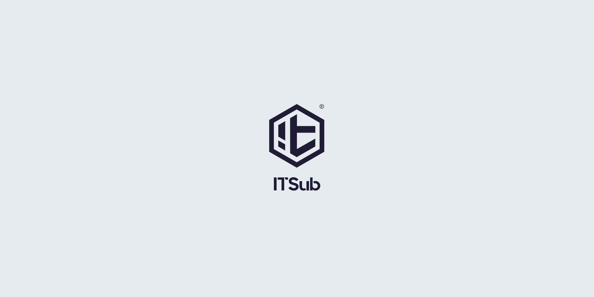
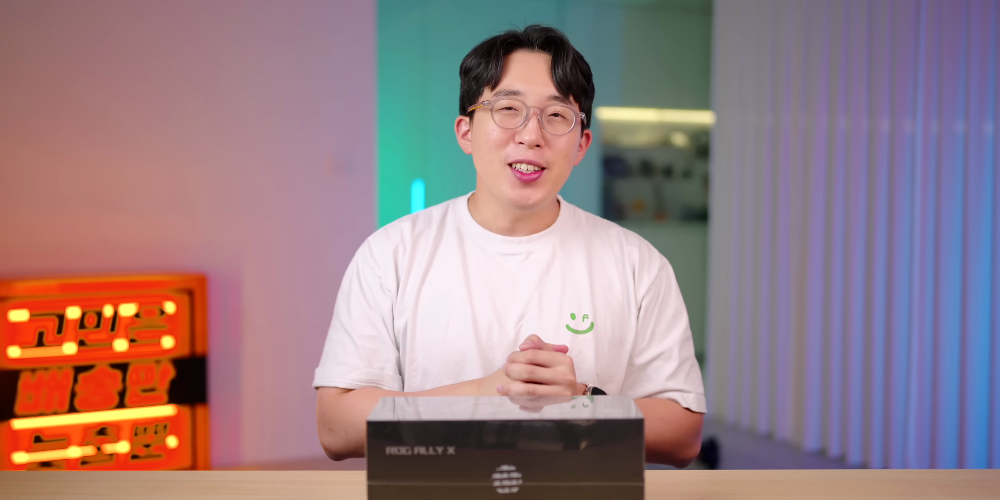
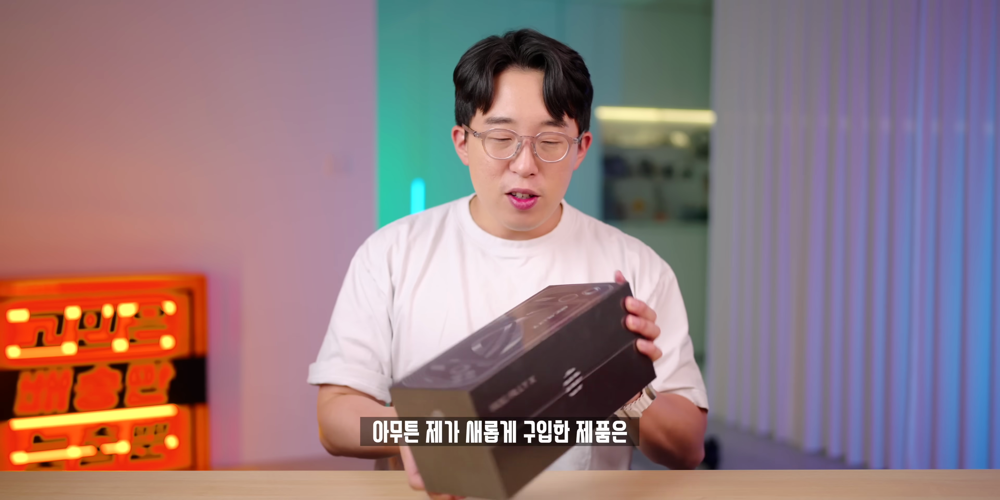
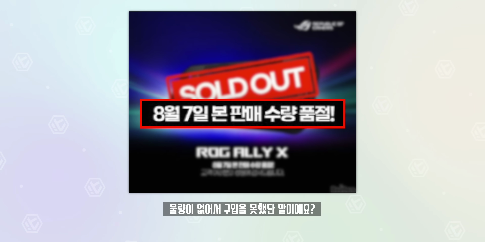
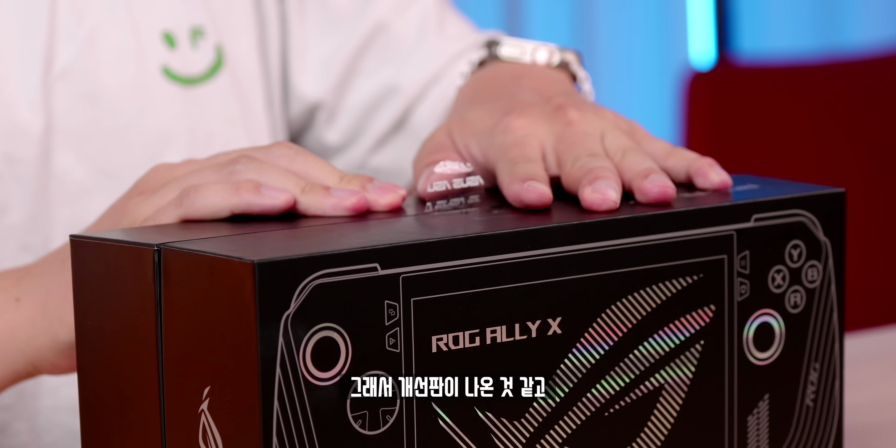
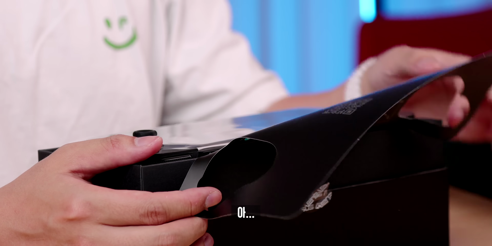
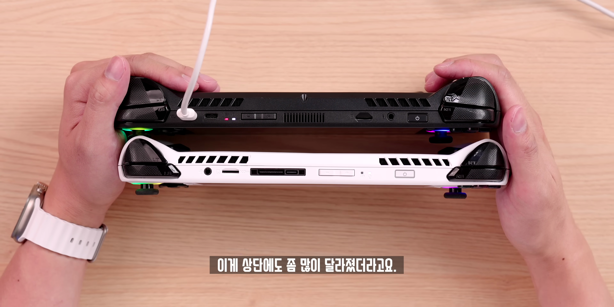

이번 포스트에서는 최근에 출시된 로그 Li X 게임기의 언박싱과 실사용 후기를 자세히 다루어 보겠습니다. 이 게임기는 최신 사양과 디자인이 도입되어 많은 기대를 받고 있으며, 과연 실제로 어떤 성능을 발휘하는지 알아보겠습니다.

게임 구매 욕구
- 가격이 떨어지길 바라는 마음
- 게임에 대한 관심
첫 인상은 가격을 눌러주는 간절한 바람으로 시작된다.

게임기 소개
- 순수 재미를 위한 컨텐츠
- 구입한 게임기 로그 LiX 소개
개인적인 재미와 흥미를 위해 구입한 로그 LiX 게임기를 소개한다.

로그 LiX 특징
- 작년부터 인기 상승
- 닌텐도 스위치와 비교
로그 LiX는 독특한 진화 과정을 겪고 있으며, 인기와 특성이 닌텐도 스위치와 다르게 나타난다.

제품의 진화
- 구형과의 비교
- 디자인 변화
로그 LiX는 구형 모델과의 디자인과 기능적 차이점을 갖춘 신제품이다.

가격 상승
- 전작 대비 가격 상승
- 출고가 평균 20만 원 증가
로그 LiX는 전작에 비해 가격이 상승하였으나, 그만한 가치를 지닌다고 평가된다.

소형 기기 접근 방식
- 봉인 방식 차이
- 소형 기기의 유틸리티
소형 기기와의 봉인 방식 차이를 통해 게임기의 접근성과 디자인 차별성을 보여준다.

디자인 평가
- 기존 흰색과 블랙 선택지
- 디자인 변화
- 디자인 만족도 저하
로그 LiX는 블랙 색상으로 변화했지만, 많은 사용자들은 여전히 흰색 디자인을 선호하는 경향이 있다.
전원 연결 및 조작
- 충전 방식 동일
- 기존 편의성 유지
기존과 동일한 충전 장치를 사용하여 간편한 조작 경험을 제공한다.

디자인 차별화
- 버튼 배치 변경
- 기기 크기 변화
버튼의 배치와 크기 변화로 인해 플레이어의 사용 편의성이 향상된다.
배터리 성능
- 배터리 용량 증가
- 사용 시간 확대
로그 LiX의 배터리 성능이 크게 향상되어 긴 시간 동안 게임을 즐길 수 있다.

게임 성능 체감
- 무게 증가 체감
- 성능의 유사성
로그 LiX는 무게 증가가 체감되지만 성능은 기존 제품과 유사하다는 평가를 받는다.

미래 전망
- 다음 세대 개발 기대
- 배터리와 무게 조정 필요
다음 세대 모델에서 배터리 성능 개선과 무게 조정이 필요할 것으로 예상된다.
Tags: #로그 LiX #게임기 #언박싱 #실사용 후기 #디자인 #배터리 성능 #게임 성능 #비교 분석